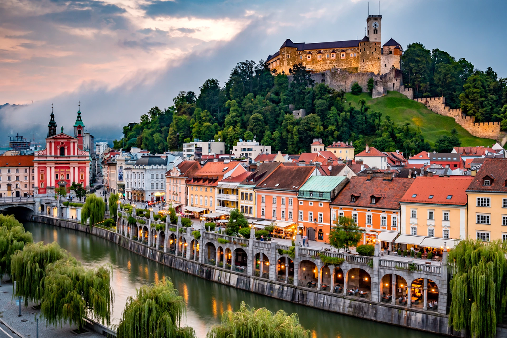

Ljubljana
| Ljubljana | |
|---|---|
| Country | Slovenia (capital and largest city) |
| Population | About 290,000–300,000 |
| River | Ljubljanica |
| Symbol | The Ljubljana dragon |
| Known for | Jože Plečnik's architecture; Ljubljana Castle; car-free old town |
Ljubljana is the capital and largest city of Slovenia, lying in a basin between the Alps and the Karst, where the Ljubljanica river winds beneath a castle-crowned hill. It is one of Europe's smallest and greenest capitals — its centre is largely car-free — and home to about 300,000 people, a fifth of Slovenia's population, plus its government, university and cultural institutions.

History and character
The Romans founded Emona here in the 1st century AD; medieval Ljubljana (Laibach in German) grew under Habsburg rule at the meeting of trade routes between the Adriatic and the Danube. Devastated by an earthquake in 1895, the city was refashioned in the 20th century above all by one man, the architect Jože Plečnik, whose bridges (the Triple Bridge), embankments, market arcades and library give Ljubljana its distinctive classical-modern face — his works were inscribed as a UNESCO World Heritage Site in 2021. The city's emblem is the dragon, from the legend of Jason and the Argonauts said to have slain a marsh monster here; dragons guard the Dragon Bridge (1901) and the castle. After Slovenia's independence from Yugoslavia in 1991, Ljubljana became a capital of the EU (from 2004) and eurozone, balancing Balkan and Central European identities like its neighbour Zagreb to the south-east.